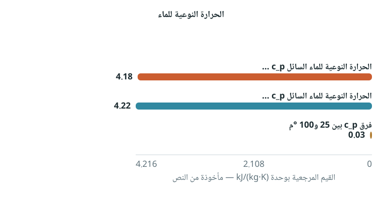

الحرارة النوعية للماء
Specific Heat of Water
الحرارة اللازمة لرفع حرارة كيلوغرام من الماء السائل درجة واحدة: 4.1816 kJ/(kg·K) عند 25 °م و4.2160 عند 100 °م، وفرق 0.8% يمنع تعميم رقم واحد على المدى كله.
الحرارة النوعية للماء عند ثبات الضغط c_p هي الطاقة اللازمة لرفع حرارة كيلوغرام واحد من الماء السائل درجة كلفن واحدة بلا تغيّر طور. قيمتها 4.1816 kJ/(kg·K) عند 298.15 K و4.2160 kJ/(kg·K) عند 373.15 K، أي بزيادة 0.0344 kJ/(kg·K) أو 0.82% بين الدرجتين، وهي زيادة مقيسة لا تفصيل هامشي. السبب أن الماء يمرّ في هذا المدى بقيمة صغرى عند نحو 308 K ثم يعود فيرتفع، فالمتوسط الخطّي يعمل على 75 K بخطأ 0.18% فقط، لكنه لا يعمل على 0–100 °م التي يكون خطؤها 0.6%. ولذلك تُحسب أحمال التسخين من فرق الإنثالبي في جداول الماء المشبع حين يتجاوز المدى نطاقًا ضيقًا: h_f(100 °م) − h_f(25 °م) = 419.17 − 104.83 = 314.34 kJ/kg، ويطابقه الضرب في المتوسط 4.1988 × 75 = 314.91 kJ/kg. وأثر ذلك هندسي مباشر: حجم خزان ماء الشمس ومعدل تدفقه يُحسبان بهذا الرقم، ونقله إلى الظرف الخطأ يغيّر الناتج بنسبة تُقاس لا تُقدَّر.
كيف تعمل الظاهرة؟
الطاقة المضافة عند ثبات الضغط تذهب إلى طاقة حركة الجزيئات وإلى شغل التمدد p·Δv، وهذا الشغل صغير في الماء السائل لأن معامل تمدده الحجمي نحو 2.6×10⁻⁴ K⁻¹ عند 25 °م، فتبقى c_p قريبة من c_v. الجزء الأكبر يذهب إلى تفكيك شبكة الروابط الهيدروجينية وإعادة ترتيبها. عند التسخين من 273 إلى 308 K تُعاد ترتيبات الشبكة فتقلّ c_p إلى قيمة صغرى نحو 4.178 kJ/(kg·K) عند 308 K، وفوق ذلك تتفكك الروابط تدريجيًا فيرتفع ما يلزم لرفع الدرجة إلى 4.2160 عند 373.15 K. هذا التغيّر البنيوي هو مصدر الاعتماد على الحرارة، وليس تغيّرًا في طبيعة الجزيء أو في كتلته.
العلاقة بالأرقام
الخطوات: c_p(298.15 K) = 4.1816 وc_p(373.15 K) = 4.2160 kJ/(kg·K). الفرق 0.0344، ونسبته إلى القيمة الأدنى 0.0344 ÷ 4.1816 = 0.00823 أي 0.82%. لحساب حرارة تسخين كيلوغرام من 25 إلى 100 °م يُؤخذ متوسط حسابي c̄ = (4.1816 + 4.2160) ÷ 2 = 4.1988، ثم Q = m·c̄·ΔT = 1 × 4.1988 × 75 = 314.91 kJ. المقارنة بجداول الماء المشبع: 419.17 − 104.83 = 314.34 kJ/kg، فالانحراف 0.18% وهو داخل خطأ المتوسط على 75 K. وعلى المدى 0–100 °م يعطي المتوسط الخطّي 421.68 kJ/kg مقابل 419.17 من الجداول، أي انحراف 0.6% لأن المنحنى يهبط إلى قيمة صغرى ثم يعود، فالمتوسط الخطّي لا يكفي على مدى واسع.
مفاهيم متقاربة
الحرارة النوعية للماء ليست الحرارة الكامنة للانصهار ولا للتبخير: الكامنة تُستهلك عند حرارة ثابتة مع تغيّر الطور، والنوعية ترفع الحرارة داخل الطور الواحد. وليست السعة الحرارية: تلك شمولية تتناسب مع الكتلة، وهذه مكثفة لا تتغيّر بحجم الخزان. وليست c_v: عند ثبات الحجم لا يُدفع شغل تمدد، والفارق بينهما للماء السائل أقل من 1% لكنه يكبُر قرب النقطة الحرجة. وليست أيضًا قيمة واحدة للماء: الجليد 2.09 والبخار 2.08 kJ/(kg·K)، ومن يعمّم 4.18 على الأطوار الثلاثة يخطئ في اثنين منها.
حدود التطبيق
الارتباط المرجعي صالح من 253.15 إلى 383.15 K عند 0.1 MPa، ولا يُمدّ خارجه بلا تحقق. عند الضغوط العالية تصير c_p دالة للضغط أيضًا، وقرب النقطة الحرجة (647.096 K و22.064 MPa) تتباعد c_p لأن الحرارة تفكّ الطور بدل أن ترفع الحرارة. وفي وجود تغيّر طور لا تنطبق Q = m·c·ΔT أصلًا. وتحت 273.15 K لا يوجد ماء سائل عند الضغط الجوي، فذكر القيمة السائلة هناك خطأ ظرف لا خطأ رقم. كما أن القيمة المتوسطة على مدى واسع ليست تكاملًا: من 0 إلى 100 °م يخطئ المتوسط الخطّي 0.6% لأن للمنحنى قيمة صغرى وسلوكًا غير خطّي.

| الكمية | القيمة | المصدر |
|---|---|---|
| الحرارة النوعية للماء السائل c_p عند 25 °م | 4.1816 kJ/(kg·K) | [1] |
| الحرارة النوعية للماء السائل c_p عند 100 °م | 4.2160 kJ/(kg·K) | [1] |
| فرق c_p بين 25 و100 °م | 0.0344 kJ/(kg·K) | [1] |
| حرارة تسخين 1 kg ماء من 25 إلى 100 °م | 314.34 kJ/kg | [2] |
المصادر
- 1 Reference Correlations for Thermophysical Properties of Liquid Water at 0.1 MPa — Journal of Physical and Chemical Reference Data (NIST) (2009). · اطُّلع عليه 2026-11-26
- 2 Thermodynamics: An Engineering Approach, 8th ed. — McGraw-Hill (2015). openlibrary.org/api/books?bibkeys=ISBN:9780073398174&format=json&jscmd=data · اطُّلع عليه 2026-11-26
استشهد بهذا المصطلح
الصيغتان مبنيتان من بيانات الصفحة نفسها: العنوان والتاريخ ورابط النسخة المنشورة.
الحرارة النوعية للماء — Specific Heat of Water. (2026). ديوان المعرفة — انفراد. https://infiradev.com/diwan/terms/term-specific-heat-water.html
@misc{term-specific-heat-water2026,
title = {الحرارة النوعية للماء},
titleaddon = {Specific Heat of Water},
howpublished = {{ديوان المعرفة — انفراد} — مرجع علمي عربي},
year = {2026},
url = {https://infiradev.com/diwan/terms/term-specific-heat-water.html},
urldate = {2026-11-26},
note = {مراجعة علمية: hermes — مراجعة آلية بالتكليف 2026-11-26}
}
راجعه: hermes — مراجعة آلية بالتكليف 2026-11-26 · 2026-11-26 · آخر تحديث 2026-11-26